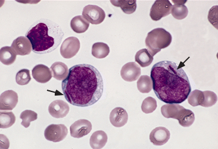

Myeloblasts with Auer rod in acute myeloid leukemia

Peripheral smear from a patient with acute myeloid leukemia. There are two myeloblasts, which are large cells with high nuclear-to-cytoplasmic ratio and nucleoli. Each myeloblast has a pink/red rod-like structure (Auer rod) in the cytoplasm (arrows).
From Brunning RD, McKenna RW. Tumors of the bone marrow. Atlas of tumor pathology (electronic fascicle), Third series, fascicle 9, 1994, Washington, DC. Armed Forces Institute of Pathology.